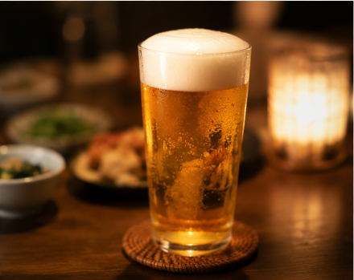
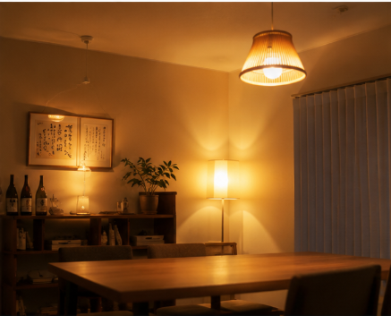
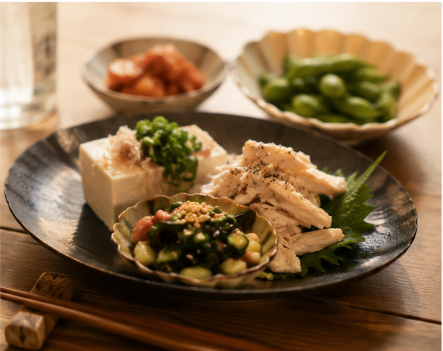
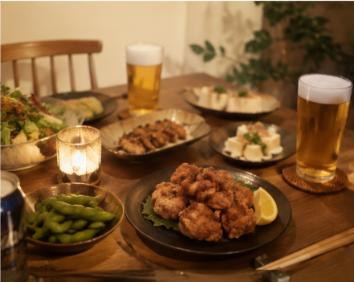

- トップ >
- おうち居酒屋の楽しみ方
おうち居酒屋の楽しみ方
おうち居酒屋をさらに楽しむための方法をご紹介します

① 好きなお酒と料理を組み合わせる
料理と相性の良いお酒を選び、自分だけのペアリングを楽しみましょう。

② 居酒屋らしい雰囲気を演出する
照明や食器、音楽を工夫するだけで、自宅でも居酒屋のような雰囲気を楽しめます。

③ 簡単なおつまみを作る
短時間で作れるレシピをいくつか用意すると、お店気分を味わえます。
④ 家族や友人と楽しむ
会話を楽しみながら食事をすることで、おうち時間がより充実します。

⑤ 季節に合わせたメニューを楽しむ
季節の食材やお酒を取り入れることで、毎回違った楽しみ方ができます。